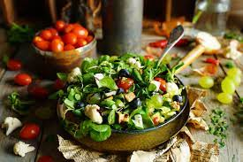

Przepisy na świąteczne smakołyki
1. Pierniki
Składniki:
- 250g mąki
- 1 łyżeczka proszku do pieczenia
- 100g miodu
- 100g cukru
- 50g masła
Sposób przygotowania:
Mąkę, proszek do pieczenia, miód, cukier i masło wymieszać. Uformować ciasto, schłodzić, a następnie rozwałkować i wycinać pierniki. Piec w piekarniku przez 15 minut w temperaturze 180 stopni C.
2. Barszcz czerwony
Składniki:
- 2 buraki
- 1 cebula
- 2 marchewki
- 3 ziemniaki
- 1/2 główki kapusty
Sposób przygotowania:
Warzywa pokroić, gotować w wodzie do momentu miękkości. Dodać przyprawy według własnego smaku. Barszcz podawać z uszkami.
3. Sernik
Składniki:
- 500g sera białego
- 4 jajka
- 1 szklanka cukru
- 1 łyżka mąki
- 1 łyżeczka wanilii
Sposób przygotowania:
Ser, jajka, cukier, mąkę i wanilię zmiksować. Powstałą masę wlać do formy i piec w piekarniku przez 45 minut w temperaturze 160 stopni C.
4. Karp smażony
Składniki:
- 1 karp
- sól i pieprz do smaku
- sok z cytryny
- mąka do obtoczenia
- olej do smażenia
Sposób przygotowania:
Karpa umyć, posolić, popieprzyć i skropić sokiem z cytryny. Obtoczyć w mące i smażyć na złoto z obu stron. Podawać z ziemniakami i sosem chrzanowym.

5. Sałatka śledziowa
Składniki:
- 500g śledzi marynowanych
- 4 ziemniaki
- 2 cebule
- 4 jajka
- 1 kiszonka kapusty
Sposób przygotowania:
Śledzie, ziemniaki, cebulę, jajka i kiszoną kapustę pokroić i wymieszać. Sałatkę podawać schłodzoną.